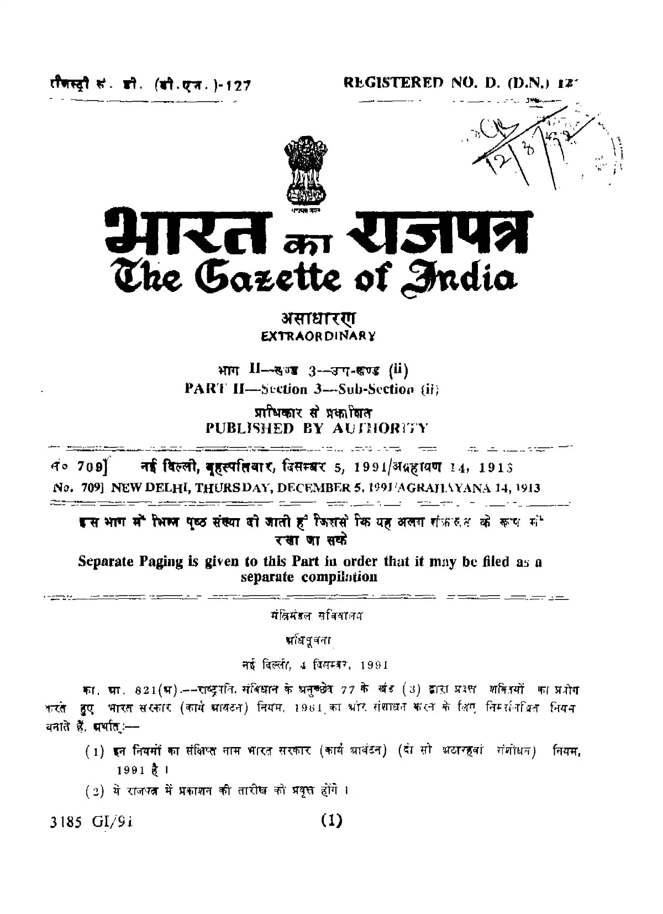
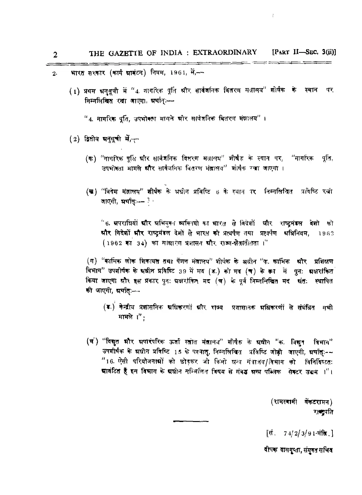
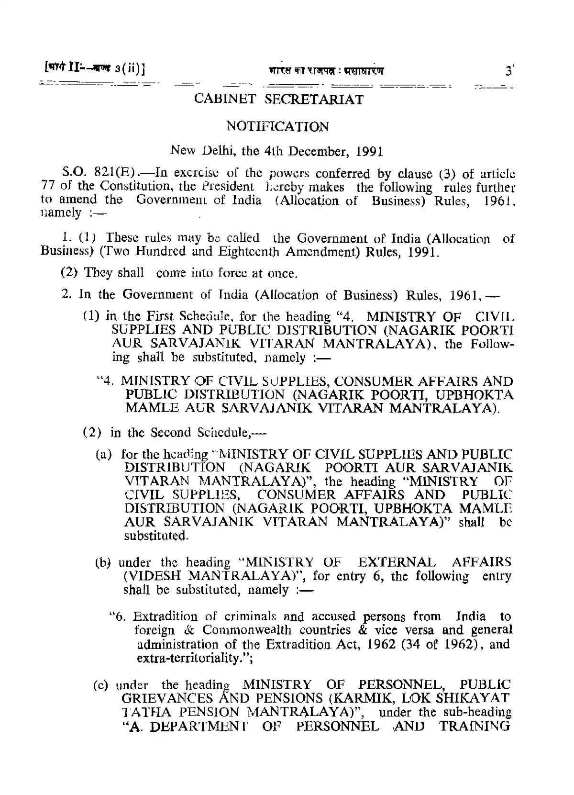
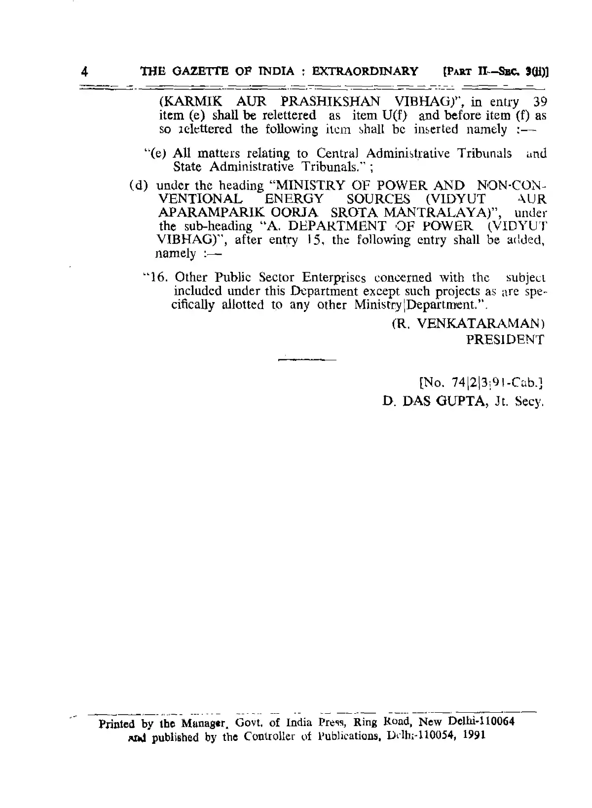

Amendment #218 (S.O. 821(E), 1991)
6 changes: 1 to the First Schedule, 5 to the Second Schedule. 6 applied
What it did to the ministries
- renamedMinistry of Civil Supplies & Public Distribution is renamed Ministry of Civil Supplies, Consumer Affairs and Public Distribution change 1, 2 · histories: Civil Supplies, Consumer Affairs and Public Distribution
The order, page by page
Page 1 of 4

Page 2 of 4

Page 3 of 4

12345Schedule 1 › MINISTRY OF CIVIL SUPPLIES AND PUBLIC DISTRIBUTION
- 4. MINISTRY OF CIVIL SUPPLIES, CONSUMER AFFAIRS AND PUBLIC DISTRIBUTION
applied at schedule 1 › ministry 4 in the Rules after #218
Schedule 2 › MINISTRY OF CIVIL SUPPLIES AND PUBLIC DISTRIBUTION
- MINISTRY OF CIVIL SUPPLIES, CONSUMER AFFAIRS AND PUBLIC DISTRIBUTION
applied at schedule 2 › ministry MINISTRY OF CIVIL SUPPLIES, CONSUMER AFFAIRS AND PUBLIC DISTRIBUTION in the Rules after #218
Schedule 2 › MINISTRY OF EXTERNAL AFFAIRS › entry 6
- 6. Extradition of criminals and accused persons from India to foreign & Commonwealth countries & vice versa and general administration of the Extradition Act, 1962 (34 of 1962), and extra-territoriality.
applied at schedule 2 › ministry MINISTRY OF EXTERNAL AFFAIRS › entry 6 in the Rules after #218
Schedule 2 › MINISTRY OF PERSONNEL, PUBLIC GRIEVANCES AND PENSIONS › DEPARTMENT OF PERSONNEL AND TRAINING › entry 39 › item e
renumbered as f
applied at schedule 2 › ministry Ministry of Personnel Public Grievances and Pen sions (Karmik, lok Shikayat tatha Pension… in the Rules after #218
before Schedule 2 › MINISTRY OF PERSONNEL, PUBLIC GRIEVANCES AND PENSIONS › DEPARTMENT OF PERSONNEL AND TRAINING › entry 39 › item f
- e. All matters relating to Central Administrative Tribunals and State Administrative Tribunals.
applied at schedule 2 › ministry Ministry of Personnel Public Grievances and Pen sions (Karmik, lok Shikayat tatha Pension… in the Rules after #218
Page 4 of 4

6after Schedule 2 › MINISTRY OF POWER AND NON-CON- VENTIONAL ENERGY SOURCES › DEPARTMENT OF POWER › entry 15
- 16. Other Public Sector Enterprises concerned with the subject included under this Department except such projects as are specifically allotted to any other Ministry Department.
applied at schedule 2 › ministry MINISTRY OF POWER AND NON-CONVENTIONAL ENERGY SOURCES › department A › entry 16 in the Rules after #218
How this document was read
From the Government of India (Allocation of Business) Rules, 1961 and their amendments, as published by the Cabinet Secretariat (cabsec.gov.in), read by orgpedia. The readings of the older scanned gazettes have known gaps.